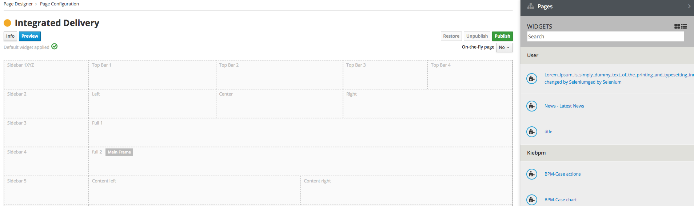
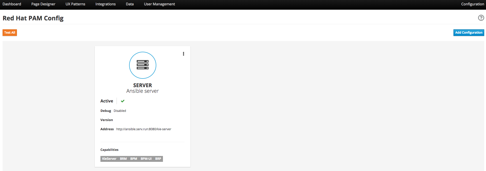

1. Entando 5.0.0 Release Notes
1.1. ABSTRACT
This document contains release notes for Entando 5.0.
1.2. PREFACE
These release notes highlight new features in Entando 5.0, list features that are in technical preview, and include any known issues.
1.3. GOAL OF ENTANDO 5
The goal of Entando 5.0 is to fully engage our platform with the Modern Applications revolution by designing for a cloud-based infrastructure, adapting our architecture to be more distributed, and fully supporting DevOps methodologies.
1.4. ABOUT ENTANDO 5
Entando 5 represents a fundamental update to the Entando infrastructure to support modern application development processes including: new options for clustering, cloud native deployment, out of the box support for deploying apps in OpenShift, new UI technologies, and an updated widget development process.
These release notes provide a technical introduction to the changes included in Entando 5. Check out our Installation guide, Getting Started guide, or our blog for examples and more on putting Entando 5 to work.
1.5. WHAT’S NEW WITH ENTANDO 5
-
Infrastructure
-
Hybrid hosting environment
-
Entando 5 supports deployment in both public and private cloud configurations including deployment using Docker and OpenShift
-
-
Cloud native clustering using a JSR 107 compliant cache for scaling in the cloud
-
Entando 5 introduces the ability to back an installation of the micro-engine with a JSR 107 cache for multi node HA configuration
-
A reference implementation using Infinispan is provided in the entando-components project
-
-
Container deployment
-
Deploy directly to OpenShift using images published to the Red Hat catalog
-
Deploy using Docker images provided on DockerHub
-
Install an Entando project using provided Source to Image (S2I) Docker images
-
-
New public facing REST APIs
-
Entando 5 exposes a new set of REST APIs for interacting with App Builder assets
-
-
Decoupled application builder and micro engine for updated deployment options
-
This release decouples the application builder’s front end from the Entando engine allowing the engine and App Builder to be deployed separately. The updated application builder is a ReactJS based application that uses REST APIs and can be deployed and managed separately from the micro-engine
-
-
Upgrade to Spring 5
-
The Entando core has been updated to Spring 5.0.5
-
-
-
Processes
-
Supports DevOps processes
-
First class support for deploying Entando projects on Docker and OpenShift
-
New archetypes to deploy to OpenShift and Docker using Fabric8
-
Created Docker base images for quick extension and deployment
-
-
Manage full CI/CD life cycle
-
Created reference implementation of Entando Docker images in Jenkins to create, deploy, and manage an application built using Entando in a CI/CD environment
-
-
Decoupled CMS from micro-engine
-
The CMS capability available in Entando 4.3.2 has been decoupled from the core micro-engine implementation and will be available as a plugin to Entando 5 in a future release
-
-
New component development experience
-
The Entando Component Generator (formerly edo) has been updated to use a configuration file to more easily select different types of components to generate
-
-
-
Security updates We have performed security scans as part of the Entando 5 software release to ensure that we are using secure libraries and practicing secure coding practices within our application. We continue to use automated tools and manual security reviews to monitor and evaluate the security of the Entando platform. Notable updates include:
-
Various library version upgrades to match OWASP security scan results at time of release
-
Software updates to support SonarQube security scans and improve software security
-
1.5.1. KNOWN ISSUES
-
The ability to associate attributes with User Profiles is not implemented in the decoupled App Builder
-
Workaround: use the legacy application screens to add attributes to user profiles
-
Anticipated fix in first patch release
-
-
Manually editing and saving Data Types and Data Models in the decoupled App Builder has errors
-
Workaround: use the legacy application screens to edit Data Types
-
Anticipated fix in future patch release
-
-
If you move the homepage to a child of itself in the page tree it can result in browser and application stability problems
-
Anticipated fix in future patch release
-
The PAM Datatable and Task List widgets only function in the legacy App Builder
-
1.5.2. VERSIONING INFORMATION
| Artifact | Version |
|---|---|
entando-core |
5.0.0 |
entando-archetypes |
5.0.0 |
entando-ux-packages |
5.0.0 |
entando-vfs-manager |
5.0.0 |
app-builder |
5.0.0 |
micro-engine-admin |
5.0.0 |
1.5.3. SOFTWARE REQUIREMENTS
-
Java 1.8+
-
npm 5.6.0+ (for ReactJS front ends)
-
Maven 3.0.5+
-
Ant 1.8.0+
1.5.4. LEGAL NOTICE
-
LGPL v2.1 License for the Core
-
MIT License for the components
1.5.5. LINKS AND RESOURCES
-
Explore the code on GitHub: https://github.com/entando
-
See our Getting Started guide: http://docs.entando.com/#getting-started
-
See our Custom App Building guide: http://docs.entando.com/#_custom_app_building_with_entando
-
Contribute to the software: https://central.apps.entando.com/en/community.page
2. INSTALLING ENTANDO 5.0
2.1. PREREQUISITES
2.1.1. TOOLS AND LIBRARIES:
-
Java 1.8+ or later required
-
npm 5.6.0+ (for ReactJS front ends)
-
Maven 3.0.5+
-
Ant 1.8.0+
-
git (to build from source)
2.1.2. SPACE AND HARDWARE REQUIREMENTS
Entando is a built to be a very light framework requiring limited runtime resources. A deployment of Entando can have a footprint as small as 58 megabytes. When extending Entando in a development setting, sizing for development environments that add to an Entando install is up to individual user requirements.
2.2. CREATING A NEW ENTANDO PROJECT
You can set up an Entando application via a Maven archetype that will create the project and structure needed to develop and add to an application.
Steps:
-
Open your command line and navigate to the directory that will house your new project.
-
Run the following command:
mvn archetype:generate -Dfilter=entando-archetype-webapp-generic -
Select Option 1, displayed as follows:
1: remote → org.entando.entando:entando-archetype-webapp-generic (Generic web app Archetype for Entando: an agile, modern and user-centric open source web app like platform.) -
If prompted for a version, select 5.0.0.
-
Enter values for groupId, artifactId, version, and package. These values go into the Maven setup in the new project.
-
Open the directory created by the Maven archetype in Step 2. The directory will have the same name as the value you entered for artifactId in Step 5. This directory contains all of the structure necessary to start the Entando MApp-Engine and execute the application. See Launching the Application section below for instructions on starting the newly created project.
2.3. LAUNCHING THE ENTANDO APPLICATION
2.3.1. QUICK START USING DERBY AND JETTY
Once you have created an Entando Application, you can launch it using Jetty and an embedded Derby database.
To do so, run the following command inside your project:
mvn clean jetty:run
Once started the logs will print the following messages:
[INFO] Started SelectChannelConnector@0.0.0.0:8080
[INFO] Started Jetty Server
[INFO] Starting scanner at interval of 5 seconds
The logs will indicate that your application is running. Follow the steps in Launching the App Builder section to launch the App Builder.
2.4. SETTING UP A DATABASE
You can configure a newly created Entando application to connect to a database as its backing store. Derby is the default configuration in archetype-created applications, but you can change the default to a different value. Open the Filter Properties file in src/main/filters and enter the appropriate environment and database configuration.
Create two databases in your dbms. The database names are strings composed like:
To connect the MApp Engine to a database server:
-
In your database server, create a user for the application.
-
Create two databases. Give the user from Step 1 permission to create, read, and write. For the quickstart the databases should be named:
<your-project-name>Port <your-project-name>Serv
|
Note
|
These are the default names included in the default properties files. You can name the databases anything you like and can change to connect to your custom names in the configuration filters in src/main/filters inside the project. |
-
You also need to uncomment the maven dependency for the database that your are using from the pom.xml file. For example for MySQL you would uncomment:
<dependency> <groupId>mysql</groupId> <artifactId>mysql-connector-java</artifactId> <version>5.1.18</version> </dependency> -
Update the appropriate Filter Properties file in src/main/filters to use the configuration for the database properties. For example, on a MacOS, you would update filter-development-unix.properties.
-
Set the user, database, and password for the values created in Steps 1 and 2.
-
Launch the application with
mvn jetty:run
|
Note
|
When launching with the mvn jetty:run command, Jetty will automatically create the table structure required to run the application if the tables aren’t already present. This can be used to instantiate an empty database for future use when the target deployment is an app server such as JBoss or Tomcat. |
2.5. LAUNCHING THE APP BUILDER
2.5.1. BUILDING FROM SOURCE
Prerequisites:
-
git
-
npm
-
node
CLONE AND SETUP
Enter the following commands in your command line:
-
git clone https://github.com/entando/app-builder.git -
cd app-builder -
npm install -
npm start— Starts the application in dev mode (local web server).
|
Note
|
The npm install command installs npm dependencies inside the node_modules folder |
This will give you a running app-builder instance using mock data. In the configuration section below we cover connecting your app-builder to a running MApp engine
CONFIGURATION
The application uses .env files to set up some environment variables.
Dev instances should be using the .env.development.local file while production instances use .env.production
Configurable properties
USE_MOCKS (boolean, default: true) a boolean used to determine whether the API calls will be against a real Entando Core or if they are just being mocked internally.
DOMAIN (string, default: null) a string representing the domain name of the Entando Core instance. The protocol is optional and it is possible to specify a subdirectory of the domain. Trailing slashes are not valid and it only vaildates up to 3rd level domains.
To connect the MApp Engine
-
Create a file at the root of the app-builder called .env.development.local
-
Add USE_MOCKS=false
-
Add DOMAIN=<url of running MApp Engine>
-
Run
npm startin your app-builder
OTHER COMMANDS
-
npm run lint
Runs the linter to check code style. It fails if linting rules are not matched. -
npm run coverage
Runs unit tests. It fails if a unit test fails, or if the minimum coverage threshold is not met. -
npm run import-plugins
Compiles and imports Entando plugins. -
npm run build
Compiles the project and creates the a production build -
npm run build-full
Runs npm run lint, npm run coverage, npm run import-plugins and npm run build
2.5.2. DOCKER
Full Stack Example Images
The project below includes scripts and example images that will boot up a full stack of Entando apps in Docker. https://github.com/entando/entando-ops/tree/master/Docker/Production/entando-full-stack
These projects are useful to quickly boot up an Entando environment in Docker. Can be forked/cloned for extension and updates as needed as well. Scripts and image names can be seen in the repository
Base Image
This base image provides a base Dockerfile that can be extended to create and manage an Entando application. The base image downloads all of the maven dependencies required for an application to run so the initial run can take some time however after that edits to a child Dockerfile will run fast. The base example in the Readme uses a jetty/derby combination for execution
https://github.com/entando/entando-ops/tree/master/Docker/Production/builder-images/docker-builder-5
Using s2i to Build Docker Images
To use the Docker s2i images, you must have already set up a database. See the Setting up a Database section for details.
By default, the app deployed in Docker will connect to a Postgres database to persist resources created using the App Builder and by the MApp Engine. In the app created from the archetype, update the properties in: <your application>/.s2i/environment to point to the user and databases created in the Setting up a Database section.
After configuring the database:
-
Pull in the Docker image using the following command:
docker pull entando/builder-s2i(Demo image using jetty) -
Build the image using s2i using the command to build and deploy a Docker app in Docker:
s2i build <path or URL of your project> entando/builder-s2i <your image name>
Where:-
<path or URL of your project> is the path to your project or a URL to access the code. The build for this project will be invoked and the resulting war file deployed to the app server in the image
-
entando/builder-s2i is the name of the base s2i docker image provided by Entando
-
<your image name> is the name for this docker image
-
Run the Image
docker run -d -p 8080:8080 <your image name>
The app may take some time to start. It is downloading maven dependencies at startup. Your app will be available on http://localhost:8080/<your_project_name>; after startup is complete.
By default the image exposes port 8080 however you can change the local port mapped to that value by editing the first instance of 8080 in the docker run command above.
2.5.3. BUILD THE MAPP ENGING FROM SOURCE
To download the latest source code:
-
Open your terminal and create an empty directory for your project:
mkdir ~/my_new_project -
Move to the new directory
cd ~/my_new_project -
Clone the following repositories IN ORDER: entando-core, entando-components, entando-archetypes, entando-ux-packages projects:
-
Entando-core:
git clone https://github.com/entando/entando-core -
Entando-components:
git clone https://github.com/entando/entando-components -
Entando-archetypes:
git clone https://github.com/entando/entando-archetypes -
(Optional) Entando-ux-packages:
git clone https://github.com/entando/entando-ux-packages
The Entando UX Packages repository contains samples of pre-made Entando-based applications.
-
-
Install, IN ORDER, the entando-core, entando-components, entando-archetypes projects:
-
cd entando-core
mvn clean install -DskipTests -
cd entando-components
mvn clean install -DskipTests -
cd entando-archetypes
mvn clean install -DskipTests
-
-
Complete the download by following the steps from the Creating a New Entando Project section.
At this point you have installed all of the dependencies required to build a new MApp Engine instance.
|
Note
|
The command to use the artifacts you have installed locally with an additional switch on the archetype command to use local values only is: |
3. GETTING STARTED WITH ENTANDO APP BUILDER
3.1. SAMPLE MORTGAGE APPLICATION PROJECT
3.1.1. PREFACE
The Entando App Builder helps you create a variety of applications and integrate them with Red Hat BPM. It uses an intuitive UI, reusable templates, and drag-and-drop functionality that allows you to participate in every stage of the application design process regardless of your level of coding knowledge.
This demonstration walks through creating an applicant page for a mortgage application, and then integrates with Red Hat PAM.
Prerequisites:
-
Entando App Builder and Core installed
3.1.2. CONFIGURING THE APPLICANT PAGE
The Applicant page is a public-facing webpage.
CREATING A NEW PAGE MODEL
Page models are reusable templates. They determine the page layout via frames into which you can then drag and drop content and widgets.
-
Open the Entando App Builder.
-
From the tabs along the top, select UX Patterns > Page Models > Add.
-
Assign the page model a code and a name. Codes represent the page model’s unique identifier. The name can be more human readable. For example:
Code: entando-page-purple
Name: Purple - BPM -
In the JSON Configuration field, enter JSON content to structure the page. See the following text for an example.
{ "frames": [ { "pos": 0, "descr": "Top bar 1", "mainFrame": false, "defaultWidget": null, "sketch": { "x1": 0, "y1": 0, "x2": 2, "y2": 0 } }, { "pos": 1, "descr": "Top Bar 2", "mainFrame": false, "defaultWidget": null, "sketch": { "x1": 3, "y1": 0, "x2": 5, "y2": 0 } }, { "pos": 2, "descr": "Top Bar 3", "mainFrame": false, "defaultWidget": null, "sketch": { "x1": 6, "y1": 0, "x2": 8, "y2": 0 } }, { "pos": 3, "descr": "Top Bar 4", "mainFrame": false, "defaultWidget": null, "sketch": { "x1": 9, "y1": 0, "x2": 11, "y2": 0 } }, { "pos": 4, "descr": "Central Bar 1", "mainFrame": false, "defaultWidget": null, "sketch": { "x1": 0, "y1": 1, "x2": 11, "y2": 1 } }, { "pos": 5, "descr": "Central Bar mortgage 2", "mainFrame": false, "defaultWidget": null, "sketch": { "x1": 2, "y1": 2, "x2": 9, "y2": 2 } }, { "pos": 6, "descr": "Central Bar left", "mainFrame": false, "defaultWidget": null, "sketch": { "x1": 2, "y1": 3, "x2": 4, "y2": 3 } }, { "pos": 7, "descr": "Central Bar Center", "mainFrame": false, "defaultWidget": null, "sketch": { "x1": 5, "y1": 3, "x2": 7, "y2": 3 } }, { "pos": 8, "descr": "Central Bar right", "mainFrame": false, "defaultWidget": null, "sketch": { "x1": 8, "y1": 3, "x2": 9, "y2": 3 } }, { "pos": 9, "descr": "Banner Advisor", "mainFrame": false, "defaultWidget": null, "sketch": { "x1": 0, "y1": 4, "x2": 11, "y2": 4 } }, { "pos": 10, "descr": "Full", "mainFrame": false, "defaultWidget": null, "sketch": { "x1": 0, "y1": 5, "x2": 11, "y2": 5 } }, { "pos": 11, "descr": "Footer Left", "mainFrame": false, "defaultWidget": null, "sketch": { "x1": 0, "y1": 6, "x2": 5, "y2": 6 } }, { "pos": 12, "descr": "Footer right", "mainFrame": false, "defaultWidget": null, "sketch": { "x1": 6, "y1": 6, "x2": 11, "y2": 6 } }, { "pos": 13, "descr": "Footer 2 Left", "mainFrame": false, "defaultWidget": null, "sketch": { "x1": 0, "y1": 7, "x2": 5, "y2": 7 } }, { "pos": 14, "descr": "Footer 2 right", "mainFrame": false, "defaultWidget": null, "sketch": { "x1": 6, "y1": 7, "x2": 11, "y2": 7 } } ] } -
In the Template field, enter XML formatting to determine where each defined frame belongs and how to render it. See the example content below:
<#assign wp=JspTaglibs["/aps-core"]> <#assign c=JspTaglibs["http://java.sun.com/jsp/jstl/core"]> <!DOCTYPE html> <html lang="en"> <head> <meta charset="utf-8" /> <title> <@wp.currentPage param="title" /> - <@wp.i18n key="PORTAL_TITLE" /> </title> <meta name="viewport" content="width=device-width, initial-scale=1.0" /> <meta name="description" content="" /> <meta name="author" content="" /> <link rel="icon" href="<@wp.info key="systemParam" paramName="applicationBaseURL" /> favicon.png" type="image/png" /> <!-- Le HTML5 shim, for IE6-8 support of HTML5 elements --> <!--[if lt IE 9]> <script src="<@wp.resourceURL />static/js/entando-misc-html5-essentials/html5shiv.js"></script> <![endif]--> <@c.import url="/WEB-INF/aps/jsp/models/inc/content_inline_editing.jsp" /> <@c.import url="/WEB-INF/aps/jsp/models/inc/header-inclusions_light.jsp" /> <style> .editableform .control-group { margin-bottom: 0; white-space: nowrap; line-height: 28px; } </style> </head> <body class="purple" data-spy="scroll" data-target="#navbar-menu"> <!-- Navbar --> <div class="navbar navbar-custom navbar-fixed-top sticky" role="navigation" id="sticky-nav"> <div class="container"> <!-- Navbar-header --> <div class="navbar-header"> <!-- Responsive menu button --> <button type="button" class="navbar-toggle" data-toggle="collapse" data-target=".navbar-collapse"> <span class="sr-only">Toggle navigation</span> <span class="icon-bar"></span> <span class="icon-bar"></span> <span class="icon-bar"></span> </button> <!-- LOGO --> <a class="navbar-brand logo" href="#"> <img alt="acme-logo" class="logo-img" src="<@wp.imgURL />Logo_Acme_Bank.png"> </a> </div> <!-- end navbar-header --> <!-- menu --> <div class="navbar-collapse collapse" id="navbar-menu"> <!--Navbar left--> <ul class="nav navbar-nav nav-custom-left"> <!--frame 0 1--> <@wp.show frame=0 /> <@wp.show frame=1 /> </ul> <!-- Navbar right --> <ul class="nav navbar-nav navbar-right"> <!--frame 2 3--> <@wp.show frame=2 /> <@wp.show frame=3 /> </ul> </div> <!--/Menu --> </div> <!-- end container --> </div> <!-- End navbar-custom --> <!-- HOME --> <section> <!--frame 4--> <@wp.show frame=4 /> <!--frame 4--> </section> <!-- END HOME --> <!-- Features Alt --> <section class="section" id="mortgage"> <div class="container"> <div class="row"> <div class="col-sm-12"> <!--frame 5--> <@wp.show frame=5 /> <!--frame 5--> </div> </div> </div> </section> <section class="section"> <div class="container"> <div class="col-sm-4"> <!--frame 6--> <@wp.show frame=6 /> <!--frame 5--> </div> <div class="col-sm-4"> <!--frame 7 frame bpm --> <@wp.show frame=7 /> <!--frame 7--> </div> <div class="col-sm-4"> <!--frame 8 frame bpm --> <@wp.show frame=8 /> <!--frame 8--> </div> </div> </section> <section> <!--frame 9--> <@wp.show frame=9 /> <!--frame 9--> </section> <section class=""> <!--frame 10--> <@wp.show frame=10 /> <!--frame 10--> </section> <section class=""> <div class="container"> <div class="col-md-12"> <div class="text-center"> <!--frame 11--> <@wp.show frame=11 /> </div> <!--frame 11--> </div> </div> </section> <!-- FOOTER --> <footer class=" "> <div class="container text-center"> <div class="row"> <div class="col-md-12"> <!--frame 12--> <@wp.show frame=12 /> <!--frame 12--> </div> </div> <!-- end row --> <div class="row"> <div class="col-sm-6"> <!--frame 13--> <@wp.show frame=13 /> <!--frame 13--> </div> <div class="col-sm-6"> <!--frame 14--> <@wp.show frame=14 /> <!--frame 14--> </div> </div> </div> </footer> <!-- END FOOTER --> <script src="<@wp.resourceURL />static/js/jquery.ajaxchimp.js"></script> <script src="<@wp.resourceURL />static/js/jquery.sticky.js"></script> <script src="<@wp.resourceURL />static/js/jquery.app.js"></script> </body> </html> -
When finished, click Save.
CREATE THE APPLICANT PAGE
-
From the tabs along the top, select Page Designer > Page Tree > Add.
-
Enter a page title and a code. The Code field will auto-populate with a value similar to the Title and acts as the page’s unique identifier. For example:
-
Title: Application Home
-
Code: application_home
-
-
From the Select Page Placement drop-down menu, select the page to act as this page’s hierarchical parent.
-
In the Page Groups section, select an Owner Group and a Join Group.
-
Owner Group members have administrative access to this page
-
Join Group members are able to see the page
-
-
In the Settings section, select the page model you just created from the Page Model drop-down menu. Once selected, set the options for the remaining options in the Settings section.
-
Click Save and Configure. This opens the Page Configuration screen.
ADD WIDGETS
-
On the Page Configuration screen, locate the Widgets section on the right side of the screen.
 -
Search for the following widgets and drag them into the specified frame:
-
Choose a language purple/light and drag to Top Bar 4
-
Main banner purple and drag to Central Bar 1
-
Left 3 steps purple and drag to Central Bar Left
-
Right col help purple and drag to Central Bar Right
-
Banner advisor purple/light and drag to Banner Advisor
TipClick the Preview button to verify the appearance of the page before publishing.
-
-
When the widgets are in place and you are satisfied with the preview, click Publish.
|
Tip
|
Only click Publish after confirming that each widget has been configured properly. |
INTEGRATE THE BPM FORM
-
From the tabs along the top, choose Integrations > Red Hat PAM Config > Add Integration.
 -
In the Connection section, add all server information. For example:
-
General Settings section:
-
Active: On
-
(Optional) Debug: On
-
-
Connection section:
-
Name: My Application
-
Host name: <my.redhat.pamInstance.com>
-
Schema: http
-
Port: 8080
-
Webapp name: kie-server
-
Username: username for the process server administrator
-
Password: password for the process server administrator
-
Conn. Timeout (in millis): 500
-
-
-
Click Test Connection to verify a valid the configuration, then click Save.
-
Open the Page Tree by choosing the Page Designer tab > Page Tree.
-
Find your new page in the Page Tree and click its More Options button > Configure.
-
Search for the “BPM-form by Data Type” widget and drag it to the Central Bar Center frame.
-
Click the Preview button to verify the correct appearance.
-
Click Publish.
4. Custom App Building with Entando
4.1. INTRODUCING THE ENTANDO APP BUILDER
The App Builder is Entando’s application to help you integrate, configure and customize any kind of modern web application, regardless of your programming proficiency. The App Builder provides an Admin Console, a visual environment, that collects elements for configuring your web application and managing your activities.
The App Builder is a ReactJS-based application that uses REST APIs to communicate with the Entando Core.
This document describes the elements and functionalities of the Admin Console.
4.1.1. ENTANDO ADMIN CONSOLE VERSION 5.0
With Entando version 5.0 the Admin Console has been redesigned and renewed with the adoption of the PatternFly framework and guidelines. PatternFly is built on top of Bootstrap3 and provides an enterprise grade UX look and feel based on research and UX best practices.
4.2. APP BUILDER OVERVIEW
The Entando main view is the entry point for every administration activity. On the up side of the screen there is an horizontal menu, which gives access to all Entando’s functionalities, while on the down-side of the screen, the Dashboard provides an overview of Entando status and a quick access to some functionalities.
4.3. DASHBOARD
The dashboard is divided into distinct areas.
-
Page Status (gives an overview of the status of the pages: Online, Online /= Draft and Draft)
-
List of Pages (gives an overview of the list of all Pages: Name, configured Page Model, Number of configured Widgets, Status, Last Modified)
-
Add Page (possibility to add a new Page)
-
User Management (quick access to Users list and Group list)
-
Add User (possibility to add a new User)
-
UX Patterns (gives an overview of the number of configured Widgets and Page Models)
-
Add Widget (possibility to add a new Widget)
-
Integrations (gives an overview of the number of integrated components and APIs)
4.4. CREATING AND MANAGING PAGES WITH PAGE DESIGNER
The Page Designer section deals with all page management-related activities.
-
Page Tree
-
Page Configuration
-
Page Settings
4.4.1. USING THE PAGE TREE
The Page Tree subsection shows the hierarchical structure of the pages and their statuses, and lets you perform all page management actions.
CREATING A NEW PAGE
-
From the tabs along the time, choose the Page Designer > Page Tree > Add.
-
Enter a name in both the English and Italian fields.
-
(Optional) Enter a code. By default, Entando generates a code similar to the page title, but you can manually enter a different code. The field accepts alphanumeric characters and underscores, with a character limit of 30.
NoteOnce you save the page, you will no longer be able to edit the page’s Code field.
-
Select an Owner Group and a Join Group from the drop-down menus in the Page groups section. Owner Group members can administer the page. Join Group members can view the page.
-
Select from the Page Tree section the page or folder that will be the parent of the new page.
-
Select a Page Model from the Page Model drop-down menu. The Page Model determines the layout of your new page. See the Using Page Models section below.
-
Set additional options from the Settings section as needed.
-
Displayed in menu: toggles the page’s presence in the menu on or off.
-
SEO: sets toggles on or off optimization of the page for Search Engine Optimization (SEO)
-
Charset: specifies the character encoding to use. Selectable between utf8 and iso-88591
-
Mime Type: identifies the type of content on the page
-
-
After you have made your selections, click Save and Configure to open the Configuration section. Learn more in the Configuring a Page section below.
-
Open the Page Tree and find the page to edit.
-
Click the Actions (three vertical dots) button in line with the page and select "Edit."
4.4.2. CONFIGURING A PAGE
The Page Configuration section is where you assign widgets to the frames defined by the Page Model you applied to your page. The available widgets are in the right pane. Apply widgets by dragging and dropping them to a frame of your choice.
This is also where you publish or unpublish the page or preview the layout prior to publishing.
Click the Info button for a summary of options you assigned when creating the page, e.g., Title and Owner Group.
4.5. UX PATTERNS: MANAGING WIDGETS, PAGE MODELS, AND FRAGMENTS
The UX Patterns section provides settings options for your general UX Patterns.
4.5.1. USING WIDGETS
A Widget is an independent software component configured and executed within your application’s page. Widgets provide UX/UI blocks that deliver a specific function.
-
User Widgets: user-generated widgets created via the Admin Console
-
Custom Widgets: widgets designed to meet specific applications needs such as Red Hat PAM widgets
-
Stock Widgets: default widgets provided by the App Builder to perform common tasks
-
Specific Application Widgets: widgets that apply only to a specific tool in Entando, e.g., the installation of CMS module provides Content Management related widgets
-
Plugins Widgets: widgets provided by the installed plugins
|
Note
|
Each widget’s Action menu differs depending on the type, including no available actions at all. |
4.5.2. USING FRAGMENTS
Fragments are single portions of front-end interface used in widgets (including plugins) and Page Models. They are are HTML blocks that include Freemarker instructions by using specific tags that you replace with appropriate values each time you use the fragment. Entando then renders the widgets using the fragments. The FRAGMENTS section lets you manage existing fragments or add new ones.
ADDING A NEW FRAGMENT
-
From the tabs along the top, choose the UX Patters tab > Fragments > New.
-
Enter a Code value. This value represents the fragment’s unique identifier and appears in the Name column of the Fragments table.
NoteOnce you save the fragment, you will no longer be able to edit its Code field.
4.5.3. USING PAGE MODELS
The Page Model is the look and feel of an application’s page. It defines the structure of the page using frames or areas of the page that contain widgets.
-
JSON Configuration: formatted text that defines the frame structure of the page.
-
Template: the look and feel and the real layout of the page. In other words, the template defines where to show a frame and how it will be rendered. Templates use Velocity Template Language (VTL) to provide an simple and clean way to incorporate dynamic content into a web page. It supports statements and directives, references and comments, access to exposed java objects, and methods.
CREATING A PAGE MODEL
-
From the tabs along the top, select UX Patterns > Page Models > Add.
-
Assign the page model a code and a name. Codes represent the page model’s unique identifier. The name can be more human readable. For example:
Code: entando-page-purple
Name: Purple - BPM -
In the JSON Configuration field, enter JSON content to structure the page. For example:
{ "frames": [ { "pos": 0, "descr": "Top bar 1", "mainFrame": false, "defaultWidget": null, "sketch": { "x1": 0, "y1": 0, "x2": 2, "y2": 0 } }NoteThe JSON content must be a single object defining "frames." In other words, the content you enter must go within the
frames: []object.See the Getting Started with Entando App Builder document for a complete example.
-
In the Template field, enter XML formatting to determine where each defined frame belongs and how to render it. See for a complete example.
-
When finished, click Save.
4.6. INTEGRATING WITH RED HAT PROCESS AUTOMATION MANAGER (PAM)
Entando integrates with Red Hat’s Process Automation Manager (formerly Red Hat JBoss BPM Suite), a middleware platform for creating cloud-native business automation applications and microservices. It enables enterprise business and IT users to document, simulate, manage, automate and monitor business processes and policies. It is designed to empower business and IT users to collaborate more effectively, so business applications can be changed more easily and quickly.
-
From the tabs along the top, choose Integrations > Red Hat BPM Config > Add Integration.
-
In the Connection section, add all server information. For example:
-
General Settings section:
-
Active: On
-
(Optional) Debug: On
-
-
Connection section:
-
Name: Ansible Server
-
Host name: ansible.serv.run
-
Schema: http
-
Port: 8080
-
Webapp name: kie-server
-
Username: username for the process server administrator
-
Password: password for the process server administrator
-
Conn. Timeout (in millis): 500
-
-
-
Click Test Connection to verify a valid the configuration, then click Save.
-
Open the Page Tree by choosing the Page Designer tab > Page Tree.
-
Find your new page in the Page Tree and click its More Options button > Configure.
-
In the right pane, search for the “BPM-form by Data Type” widget and drag it to a frame established by your page model.
-
Click the Preview button to verify the correct appearance.
-
Click Publish once your page is complete.
4.7. MANAGING USERS
The Entando App Builder assigns access rights using combinations of roles and groups. You can manage all activities and privileges for roles and groups through the User Management tab.
-
Users: perform operations and access information. Users are characterized by a Profile Type that identifies the individual, such as name and email address. The actions that a user can take in an Entando program derive from combinations of Roles and Groups.
-
Roles: assigned sets of permissions, e.g., content editing rights, or user profile editing rights. Roles are mutually independent, meaning one user can be associated with multiple roles.
-
Groups: assigned sets of users, with each user given a role within the group. One user can belong to multiple groups. For example, Lynne is a member of the Content Editing group and has the role of Administrator, giving her the ability to perform any task on pages that the Content Editing group is assigned to. She’s also a member of the Newsletter group with the role of Editor, meaning she can edit content, but does not have full access to the pages the Newsletter group is assigned to.
-
User Restrictions: perform access restrictions on the users, e.g., months availability since the last access, or months validity of the user password, etc.
-
Profiles Types: perform different user’s profile types and creation of the new profile types.
|
Tip
|
For first time projects, consider creating profiles from largest to smallest. For example:
|
4.7.1. WORKING WITH USERS
CREATING A ROLE
-
From the tabs along the top, select User Management > Roles > Add.
-
Enter a name.
-
(Optional) Enter a code. The code is the Role’s unique identifier. By default, Entando generates a code similar to the page title, but you can manually enter a different code. The field accepts alphanumeric characters and underscores, with a character limit of 30.
NoteOnce you save the role, you will no longer be able to edit the page’s Code field.
-
In the Permissions section, toggle to "On" the access rights all users assigned to this role will possess. For example, public users may have no options toggled while power users may have the "All Permissions" option toggled to On.
-
Click Save. To edit a Role after saving, return to the Roles screen. In the Roles table, select the Actions menu (three vertical dots) for the role to change and select "Edit."
CREATING A GROUP
-
From the tabs along the top, select User Management > Groups > Add.
-
Enter a name.
-
(Optional) Enter a code. The code is the Group’s unique identifier. By default, Entando generates a code similar to the page title, but you can manually enter a different code. The field accepts alphanumeric characters and underscores, with a character limit of 30.
NoteOnce you save the group, you will no longer be able to edit the group’s Code field.
To edit a Group after saving, return to the Groups screen. In the Groups table, select the Actions menu (three vertical dots) for the group to change and select "Edit."
CREATING A USER
-
From the tabs along the top, choose User Management > Users > Add.
-
In the Username field, enter
NoteThe username must be between 8-20 characters. You can use numbers, underscores, special characters, and upper or lowercase letters.
-
Enter a password.
-
From the Profile Type drop-down menu, select “Default User Profile.”
-
Toggle the Status to “On” to ensure that individuals can sign in with this user’s credentials.
-
Click Save to create the user and return to the Users screen.
SETTING A USER’S AUTHORIZATIONS
-
From the table on the Users screen, find your new user profile and click More Options > Manage authorizations for: your profile name. Set the following options:
-
User Group: select a group to assign this user to. You can assign a user to as many groups as you want.
-
User Role: select the role this user should have in the group. You can only assign a user to one role per user group.
The User Group/Role pairing will appear in the Authorizations table at the top of the screen.
-
-
Click Add and then click Save.
4.7.2. RESTRICTING ACCESS
Entando lets you set restrictions on users (see Figure below), specifically a shelf life for passwords and a maximum time between log ins before the password expires.
-
From the tabs along the top, choose User Management > User Restrictions.
-
Toggle the Password Always Active option.
-
On - the password never expires and users have unlimited time between logins
-
Off - activates the password limitation fields, allowing you to set expirations
-
-
Toggle the Enable Gravatar integration (Avatar of users) option.
-
On - enables management of the user’s avatar
-
Off - disables Gravatar integration
-
4.8. PRESENTING DATA
Data Types are collections of attributes. They are used to gather and manage data coming from external sources, like APIs or the IoT. This abstraction layer allows Entando to perform core features like searching on external data.
Data Models are used to agnostically render data coming from data types, ensuring that the same data can be represented differently, such as with forms, tables, or graphs. By separating the definition and presentation of data, the Entando App Builder gives you the ability to display the same data in a context- and user-aware way without requiring a data source or integration.
-
Create a Data Type.
-
Create one or more Data Models per Data Type.
-
Publish the data on web pages with one or more widgets. The Data section allows you to manage the Data.
4.8.1. STRUCTURING WITH DATA TYPES
The Data Types section lists all available Data Types, their attributes, and is where you can create a new data structure.
-
From the tabs along the top, choose Data > Data Type > New.
-
Enter a Code. The code must be three letters.
-
Enter a Name.
-
Click Save. This opens the Attributes section where you specify OGNL validation.
4.9. CONFIGURING ENTANDO
The Configuration section (far right of the toolbar, gives you access to Entando general duty functionalities, such as configuring Categories, Labels, Configuration Reload, Database backup, file browsing and groups management.
4.9.1. CATEGORIES
Categories are dividers and parent folders for pages in your Entando page tree. Add a new category by clicking the Add button.
4.9.2. LABELS AND LANGUAGES
The Languages tab displays a list of all configured languages in the system. You can add as many different languages to the system as you need by selecting a language from the Select Language drop down menu and clicking Add. You can then include the appropriate vocabulary for any term in the System Labels section.
The System Labels tab displays system labels that apply to the entire Entando application. By default, system labels are available in English and Italian. If you add additional languages in the Languages tab, you can enter the appropriate word for a label in your choice language.
4.9.3. DATABASE
The Database section lets you back up your entire Entando’s database by clicking the Create Backup button. The backed up files become available from the Protected folder of the File Browser section once the backup process completes.
4.9.4. FILE BROWSER
The File Browser section lets you browse files, upload, create text files and folders, and access database backups from two distinct areas of the file-system:
-
Public: /project_name/src/main/webapp/resources
-
Protected: /project_name/src/main/webapp/protected
|
Note
|
Backed up database files are in the Protected section by default. |